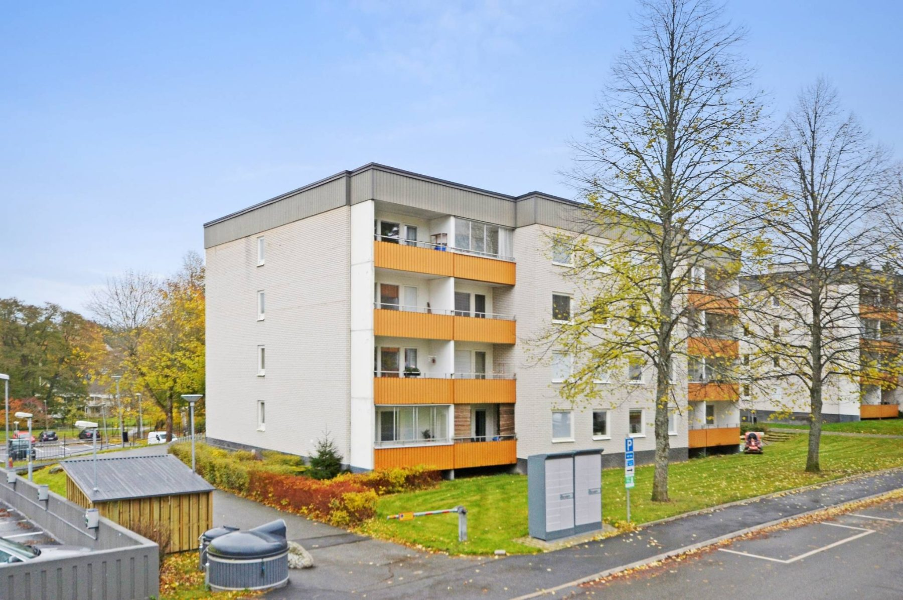

←
Tillbaka till förslagen
1a · Balkongen
Sågenvägen
Bostadsrättsförening
Aktuellt
Boka
Dokument
Området
Kontakt
Mina sidor
Vendelsö, Haninge · sedan 1972
Välkommen hem.
Här hittar du som bor på Sågenvägen allt som rör din förening – från tvättstugetider till styrelsens protokoll.
Boka tvättstuga
Nästa lediga: i morgon 08–11
→
Felanmälan
Något som är trasigt?
→
Samlingslokalen
Hyr till kalas och möten
→
Stadgar & protokoll
Dokumentarkivet
→
Aktuellt
14 nov
Stamspolning i hus 16–22
Tisdag 18 november. Vattnet kan vara avstängt mellan 09 och 12.
2 nov
Höststädning på gården
Vi samlas lördag kl. 10 vid samlingslokalen. Föreningen bjuder på fika.
21 okt
Nya tider i tvättstugan
Passen börjar nu 07.00 på vardagar. Boka som vanligt via Boka.

Balkongerna mot söder, oktober
199
lägenheter
10
flerbostadshus
1972
området byggs, klart 1975
2011
föreningen äger sin mark
Brf Sågenvägen · Sågenvägen 22, 136 71 Vendelsö
Logga in · Kontakta styrelsen